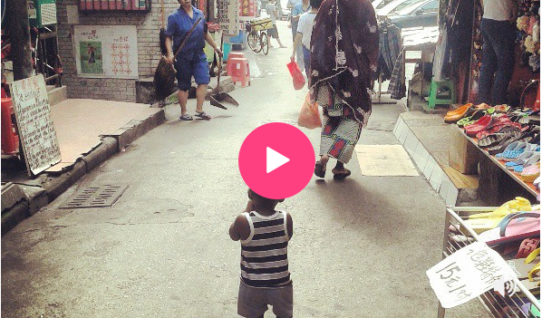

Life in China's "Little Africa"
Tens of thousands of Africans have come to China in search of a better life. They have carved out a space in the city and challenged the homogenous culture along the way.
Hear their stories
SETTLEMENT
ISOLATION
INTEGRATION
The growing prescence of Africans in Guangzhou, the third largest city in China,is the flip side of China's influence in Africa and a reflection of increasing ties between the two regions. African students coming on government scholarships and traders looking for cheap goods to sell back to their home country flock to the area called "Xiaobeilu" (Little North Road) or known among locals as the "Little Africa" or "Chocolate City".
Sidewalks are lined with cheap motels, passport photo booths and ethnic restaurants and shops. The Little Africa has come to represent the frontier of multicultural existence in the society where more than 90 percent of the population is Han Chinese.
"China wants to improve its economy and I want to make money. That's why I'm here. China is the next big thing."
Maecenas accumsan efficitur odio eu pretium. Morbi sit amet dolor ex. Nunc fermentum porta ipsum, vitae varius libero fermentum in. Pellentesque varius convallis efficitur. Vivamus at risus diam. Nunc enim quam, pellentesque vel mi a, semper mollis nulla. Nunc nec rhoncus ipsum, et tempor purus.

Maecenas accumsan efficitur odio eu pretium. Morbi sit amet dolor ex. Nunc fermentum porta ipsum, vitae varius libero fermentum in. Pellentesque varius convallis efficitur. Vivamus at risus diam. Nunc enim quam, pellentesque vel mi a, semper mollis nulla. Nunc nec rhoncus ipsum, et tempor purus.